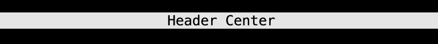
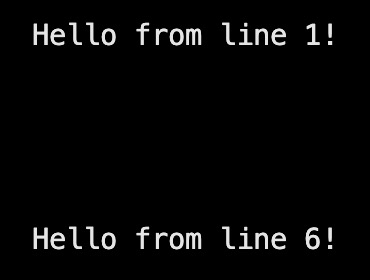
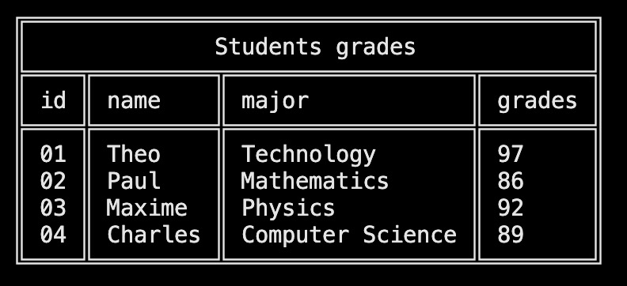
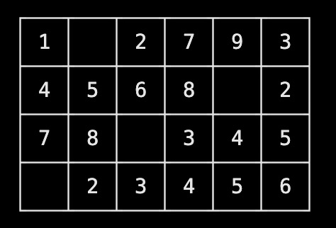
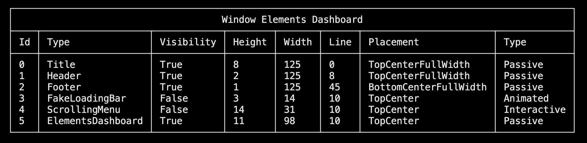
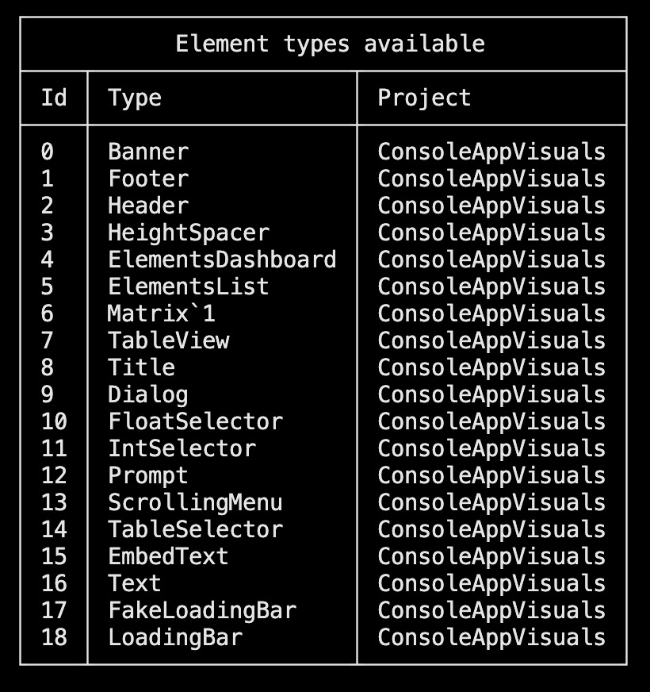

Passive
Classic elements
| Visual | Description | Documentation |
|---|---|---|
The Text is a simple text element that can be used to display information to the user. |
Read more | |
The EmbedText is a text element that has been embed. Nothing more. |
Read more | |
The Title is a text element that can be used to display a title at the top of the console. (You may change the font) |
Read more | |
|  | The Banner is a text element that can be used to display a banner. |
Read more |
The Header is a banner placed at the top of the console. |
Read more | |
The Footer is a banner placed at the bottom of the console |
Read more | |
|  | The HeightSpacer is a passive element that can be used to add a vertical space. |
Read more |
|  | The TableView is a passive element that can be used to display a table. (You may change the style fo the borders) |
Read more |
|  | The Matrix is a passive element that can be used to display a matrix. (You may also change its style) |
Read more |
The ASCIIArt is a passive element that can be used to display an ASCII artwork composed of multiple string lines. |
Read more |
"Inspectors" elements
These are debugging elements and should not be used in a production environment. They are not very customizable and are intended to be used for debugging purposes only.
| Visual | Description | Documentation |
|---|---|---|
|  | The ElementsDashboard is a passive element that can be used to display the list of elements currently stored in the Window. |
Read more |
|  | The ElementsList is a passive element that can be used to display the list of elements currently available (from the library or the local project). You may select the type expected (Default, Passive, Interactive or Animated). |
Read more |
Have a question, give a feedback or found a bug? Feel free to open an issue or start a discussion on the GitHub repository.